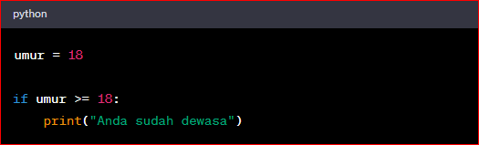
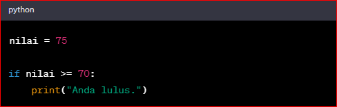
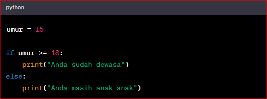
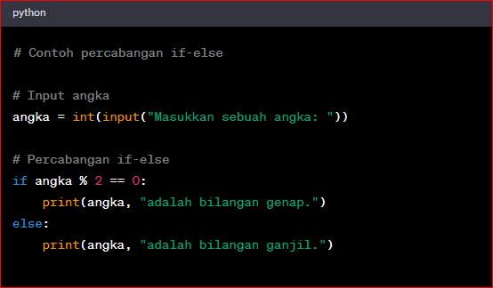
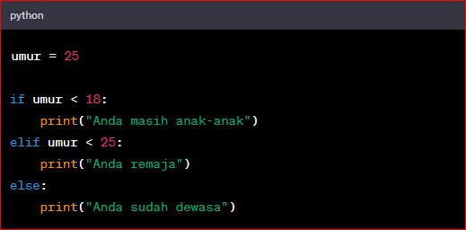
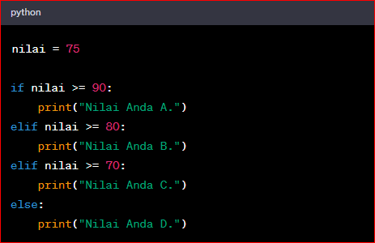

Percabangan dalam dunia pemrograman adalah proses penentuan keputusan atau dalam bahasa Inggris ini biasa disebut sebagai conditional statement.
Konsepnya sederhana: kita menginstruksikan komputer untuk melakukan suatu aksi tertentu (X), hanya jika suatu kondisi Y terpenuhi. Atau, kita
memerintahkan komputer untuk melakukan aksi tertentu (A) jika suatu kondisi tidak terpenuhi.
Premisnya adalah "Jika-Maka". Contoh:
Jika nilai siswa lebih dari atau sama dengan 90, maka dia dapat predikat A.
Jika nilai siswa lebih dari atau sama dengan 80, maka dia dapat predikat B.
Jika nilai siswa lebih dari atau sama dengan 40, maka dia dapat predikat C.
Dan seterusnya.
Ilustrasi:
Dalam Python, percabangan digunakan untuk memilih tindakan yang akan diambil berdasarkan kondisi tertentu. Pada dasarnya, ada dua jenis percabangan yang umum digunakan dalam Python: if dan if-else.
Berikut adalahh video penjelasan tentang percabangan Dalam python
Pengaplikasian percabangan dalam program (code)
Percabangan if:
Percabangan if digunakan untuk mengevaluasi suatu kondisi, dan jika kondisi tersebut bernilai True, maka blok kode yang terkait akan dieksekusi.

Pada contoh di atas, jika nilai variabel umur lebih besar atau sama dengan 18, maka pesan "Anda sudah dewasa" akan dicetak.
Dan contoh if yg lain

Penjelasan:
Code di atas menggunakan percabangan if untuk memeriksa apakah nilai variabel `nilai` lebih besar atau sama dengan 70. Jika kondisi tersebut terpenuhi (nilai `nilai` lebih besar atau sama dengan 70), maka blok kode di dalam if akan dieksekusi.
Pada contoh di atas, `nilai` memiliki nilai 75. Ketika dilakukan perbandingan `nilai >= 70`, kondisinya terpenuhi karena 75 lebih besar dari 70. Oleh karena itu, blok kode di dalam if akan dieksekusi. Dalam hal ini, blok kode hanya mencetak string "Anda lulus.
Dalam percabangan if, blok kode yang dijalankan tergantung pada apakah kondisi yang diberikan bernilai `True` atau `False`. Jika kondisi bernilai `True`, maka blok kode di dalam if akan dieksekusi. Namun, jika kondisi bernilai `False`, maka blok kode di dalam if akan diabaikan dan tidak dieksekusi.
Dalam contoh di atas, karena kondisi `nilai >= 70` bernilai `True`, maka blok kode di dalam if dieksekusi dan mencetak "Anda lulus." Jika kondisi tersebut bernilai `False`, maka blok kode di dalam if tidak akan dieksekusi.
Percabangan if-else:
Percabangan if-else digunakan ketika kita ingin menjalankan blok kode yang berbeda tergantung pada apakah kondisi bernilai True atau False.

Pada contoh di atas, jika nilai variabel umur lebih besar atau sama dengan 18, maka pesan "Anda sudah dewasa" akan dicetak. Jika kondisi tidak terpenuhi, pesan "Anda masih anak-anak" akan dicetak.

Penjelasan:
Pertama, kita meminta pengguna untuk memasukkan sebuah angka menggunakan fungsi input. Angka tersebut akan disimpan dalam variabel angka.
Kemudian, kita menggunakan percabangan if-else untuk memeriksa apakah angka tersebut genap atau ganjil.
Pada baris 6, kita menggunakan operator modulo (%) untuk memeriksa sisa hasil bagi angka dengan 2. Jika sisa hasil bagi adalah 0, maka angka tersebut genap. Jika tidak, maka angka tersebut ganjil.
Jika angka tersebut genap, program akan mencetak pesan bahwa angka tersebut adalah bilangan genap.
Jika angka tersebut ganjil, program akan mencetak pesan bahwa angka tersebut adalah bilangan ganjil.
Contoh di atas hanya menggunakan percabangan if-else sederhana untuk memeriksa genap atau ganjilnya sebuah angka. Percabangan if-else juga dapat digunakan dengan kondisi yang lebih kompleks dan dapat dikombinasikan dengan percabangan lainnya seperti if-elif-else.
Selain itu, kita juga dapat menggunakan percabangan if-elif-else untuk mengevaluasi beberapa kondisi yang berbeda.

Pada contoh di atas, jika nilai variabel umur kurang dari 18, maka pesan "Anda masih anak-anak" akan dicetak. Jika kondisi pertama tidak terpenuhi dan nilai umur kurang dari 25, maka pesan "Anda remaja" akan dicetak. Jika kedua kondisi sebelumnya tidak terpenuhi, pesan "Anda sudah dewasa" akan dicetak.
Itulah penjelasan singkat mengenai percabangan dalam Python dan contoh-contoh kode yang terkait. Percabangan ini memungkinkan kita untuk membuat program yang dapat mengambil keputusan berdasarkan kondisi yang ada.
Dan contoh if elif else yg berbeda

Penjelasan:
Dalam contoh di atas, kita menggunakan percabangan if-elif-else untuk memeriksa rentang nilai `nilai` dan memberikan keterangan berdasarkan rentang nilai tersebut.
Jika `nilai` lebih besar atau sama dengan 90, maka blok kode di dalam if akan dieksekusi dan akan mencetak "Nilai Anda A."
Jika kondisi di atas tidak terpenuhi, maka akan dilanjutkan ke percabangan elif selanjutnya.
Jika `nilai` lebih besar atau sama dengan 80, maka blok kode di dalam elif akan dieksekusi dan akan mencetak "Nilai Anda B."
Jika kondisi di atas tidak terpenuhi, maka akan dilanjutkan ke percabangan elif berikutnya.
Jika `nilai` lebih besar atau sama dengan 70, maka blok kode di dalam elif akan dieksekusi dan akan mencetak "Nilai Anda C."
Jika semua kondisi di atas tidak terpenuhi, maka blok kode di dalam else akan dieksekusi dan akan mencetak "Nilai Anda D."
Dalam contoh di atas, `nilai` memiliki nilai 75. Karena kondisi `nilai >= 70` terpenuhi, maka blok kode di dalam elif pertama akan dieksekusi dan mencetak "Nilai Anda C."
Percabangan if-elif-else digunakan ketika terdapat beberapa kondisi yang ingin diperiksa secara berurutan. Ketika salah satu kondisi terpenuhi, blok kode di dalam kondisi tersebut akan dieksekusi, dan blok kode di dalam kondisi lainnya akan diabaikan. Jika tidak ada kondisi yang terpenuhi, maka blok kode di dalam else (jika ada) akan dieksekusi.
 Log Out
Log Out